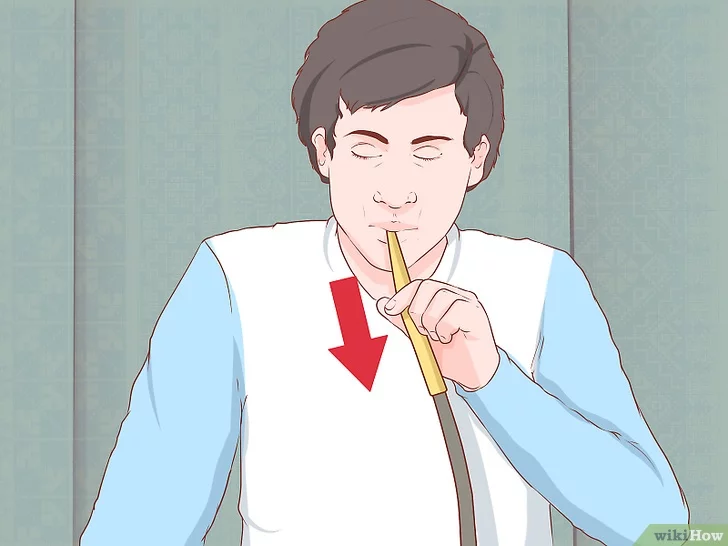

- Coloque água e gelo na base. A ponta do tubo deve ficar aproximadamente 3,8 cm abaixo da linha da água.
- O espaço vazio na base deve ser apenas o suficiente para que a água não respingue para dentro da mangueira.
- Não coloque leite ou laticínios na base. Esses produtos impregnam o narguilé de um cheiro desagradável,
favorecem o surgimento de fungos e a espuma criada por eles pode estragar a mangueira.
- Coloque o anel isolante. Ele serve para vedar a ligação entre o corpo e a base.
- Muitos modelos de narguilé vêm de fábrica com um anel de borracha ou silicone (que é o material mais adequado entre os dois).
- Se o seu modelo não possui esse componente, você pode fazer a vedação com fita isolante.
- Encaixe o prato no corpo do narguilé.
- É importante que isso seja feito agora, pois será impossível encaixar o prato quando o fornilho estiver no lugar.
- Encaixe a mangueira na cavidade do corpo.
- Se o seu narguilé tem duas saídas para as mangueiras, você pode comprar um tampo de borracha para fechá-la.
- Prepare o narguilé.Siga os passos abaixo para a melhor fruição possível:
- Misture o tabaco (também chamado de essência), de maneira homogênea, até que todo ele esteja coberto de essência ou melado.
- Afofe o tabaco e despeje-o no fornilho sem pressionar. A fim de que o tabaco não toque o papel-alumínio, deixe 2 mm de distância
entre ele e a borda do fornilho. Fumo queimado confere um gosto desagradável à fumaça. - Compre essência de boa qualidade. É a qualidade do produto que determina o sabor da fumaça. Você também pode combinar
essências e criar a fumaça que desejar. Compre apenas 50 g das essências que você ainda não conhece, para que você possa
experimentá-las sem gastar muito dinheiro. - Corte as folhas de tabaco com uma tesoura de cozinha para poder colocá-las no fornilho com facilidade.
Mas não as deixe pequenas demais, ou elas cairão pelos orifícios do fornilho, entupindo-o.
- Cubra o fornilho com folhas de alumínio de alta gramatura.
Corte um quadrado com 5 cm de lado e embrulhe com ele a boca do fornilho. - Estique bem o papel-alumínio por sobre a abertura, pois dobras podem atrapalhar a distribuição de calor.
Se você tem somente o papel-alumínio comum à disposição, faça uma camada dupla. - Ao terminar, o papel-alumínio se parecerá com a pele de um tambor.
- Com um palito de dente, um alfinete ou a ponta de uma lapiseira, faça de 15 a 20 furos na folha de alumínio.
Escolha a distribuição dos furos de acordo com o tipo de fornilho que você está usando: Fornilho egípcio: trace um círculo de furos próximo à borda do fornilho e comece a fazer uma espiral em direção ao centro.Fornilho phunnel:faça três círculos concêntricos — um próximo à borda, outro alinhado ao buraco central do fornilho e o terceiro, entre esses dois.
- Acenda os carvões.Segure o carvão com uma tenaz e acenda uma quina com um fósforo ou um isqueiro.
Fique fora de casa ou perto de uma janela, pois ele produzirá faíscas. - Use apenas a tenaz que vem com o narguilé para acender e mover os carvões. A pinça de cozinha pode ser revestida de
um polímero antiaderente específico para a preparação de alimentos e facilitar a limpeza. - Assim que o carvão começar a brilhar e soltar fumaça, tire-o do fogo. O brilho se espalhará até que todo ele fique em brasa.
- Caso o carvão tenha alguma parte ainda escura, assopre-o para terminar de acendê-lo.
- Ainda com auxílio da tenaz, ponha o carvão em brasa sobre o papel-alumínio.
As regiões tocadas pelas pontas da tenaz estarão apagadas, então, assopre-as até ficarem rubras.
Deixe os carvões sobre o papel-alumínio até que todos estejam completamente cobertos por uma camada de cinzas. - Jamais acenda os carvões diretamente sobre o papel-alumínio. Eles liberarão partículas que penetrarão no fornilho, alterando o sabor da essência.
- Não havendo acesso a um fogão, isqueiro ou fósforos, use carvão de acendimento instantâneo.
- Carvões naturais queimam por mais tempo que os instantâneos, mas precisam de mais calor para acender.
Muitas pessoas usam o fogão elétrico ou um maçarico a gás para acender carvões naturais.

- Assopre a mangueira antes de instalá-la para desalojar poeira ou partículas que possam ter bloqueado a passagem de ar.
- Não lave a mangueira, a não ser que esteja certo de que ela é lavável.
- TragueEspere o narguilé se aquecer naturalmente. Não tente acelerar o processo puxando o ar com força,
pois isso apenas queimará a essência. Fume com calma. Um bom narguilé deve ficar aceso de 45 minutos a uma hora.